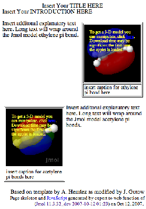

This tab is
designed to produce a web page template (no explanatory text) that
displays images of Jmol graphics, each of which can be converted to a
live Jmol display by the user. This makes initial loading of the
page faster. The image and initial Jmol setup for each occurence
can be chosen by setting up the Jmol viewer the way you wish. You
add the text later in your favorite web editor. An example picture of
such a page is shown below:

This panel can be opened once and returned to anytime.
Instructions
1) Set the relative path to the Jmol applet on you web site from where
you will put the folder (directory) containing the files created by
this program. Each "../" means step up one directory level.
Do not forget to account for the fact that the page produced by this
program is inside a folder (directory) that you will be adding to your
web site. Example: Jmol applet is in directory
/www/applets/java/jmol and your web site is in the directory
/www/yourname. You will be adding one more level for this page
(e.g. /www/yourname/thispage). The correct path to the Jmol
applet is ../../applets/java/jmol.
2) Open the first file you want to appear in your page using the
File..Open.. menu in the Jmol viewer. If you will be using more than one model,
open the models one at a time (not using load append), and follow steps
(3) - (5) for each individual model.
3) Set the state of the model
(zoom, rotate, select, change colors, add orbitals, set the molecule
spinning, etc.)exactly the way you want it to appear on the web page.
4) Set the width and height for the model on this tab. There is no need to resize the application window itself.
5) Click on the "Add Present Jmol State as Instance" button and select a name for this applet instance.
6) Repeat for as many different displays as you wish. Because of
the memory constraints of web browsers, it is probably best to limit
yourself to no more than a few instances of Jmol on a single web
page. The larger the applet size, the more of a problem this will be.
However, you can certainly create a page with several applets and then split it later into multiple web pages.
7) When you are done, click on "Save HTML as..." Provide either the name of a new directory for this page or
the name of the HTML file (.htm or .html) you want to create or replace. All necessary files will be created
in the same directory. These include the HTML page itself, the JavaScript file JmolPopin.js, and three files for each model: a data file, a Jmol script, and a PNG image.
If a new directory is indicated, the HTML file will be created in that directory
and have the same name, with ".html" appended.
8) Open the HTML file in your favorite web editor and add you
explanatory text and anything else you wish. As long as you do
not alter the inside of the tables where Jmol will be displayed, you
should be able to change the page without disrupting the JavaScript
that controls the behavior of Jmol.